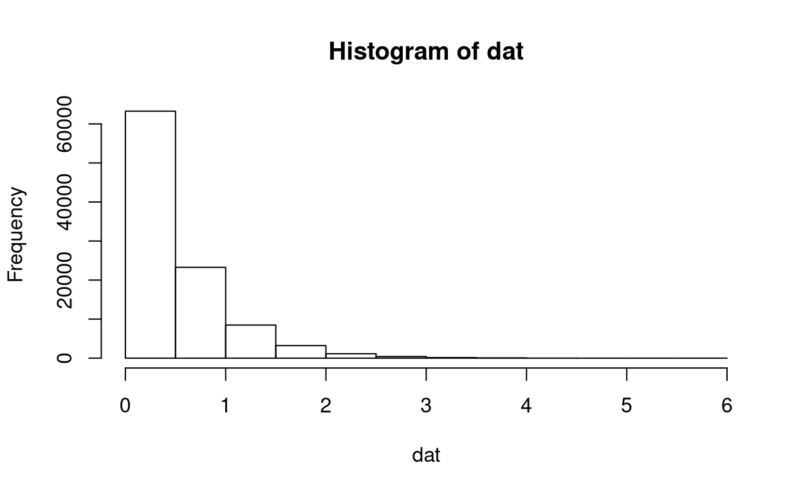
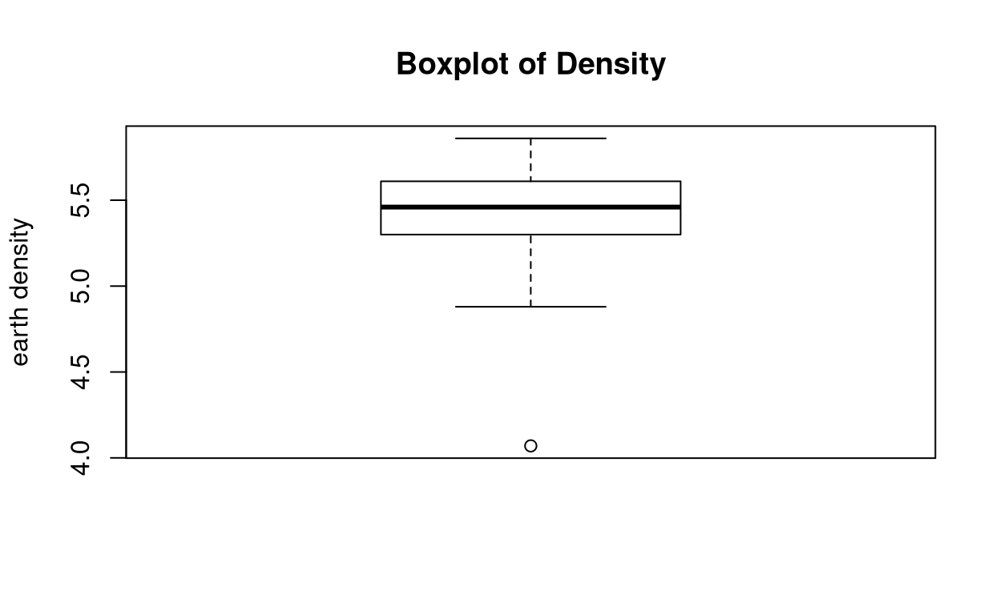
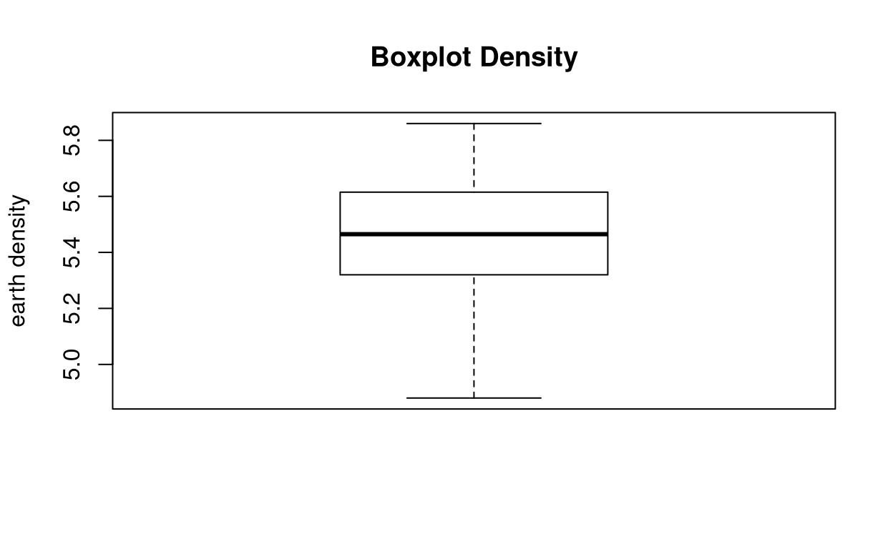
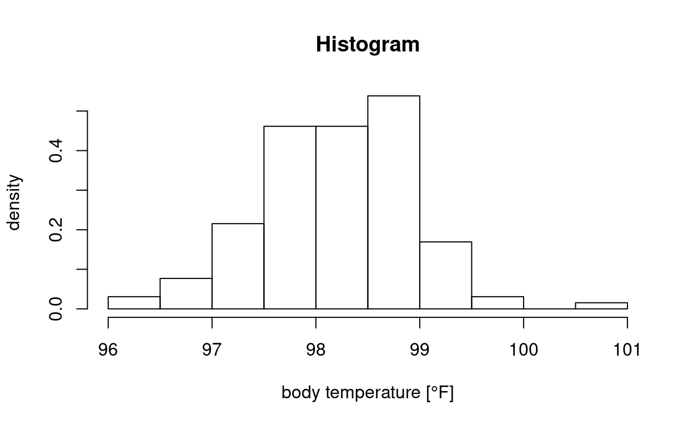
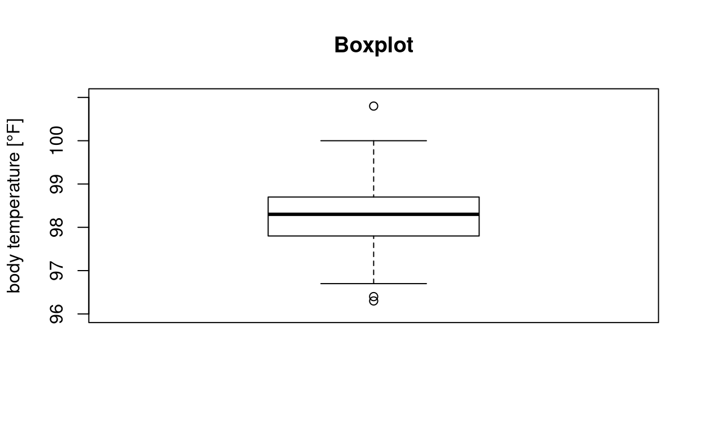
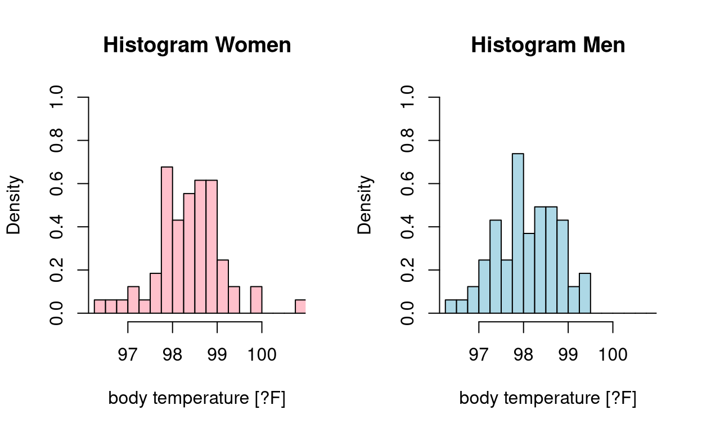
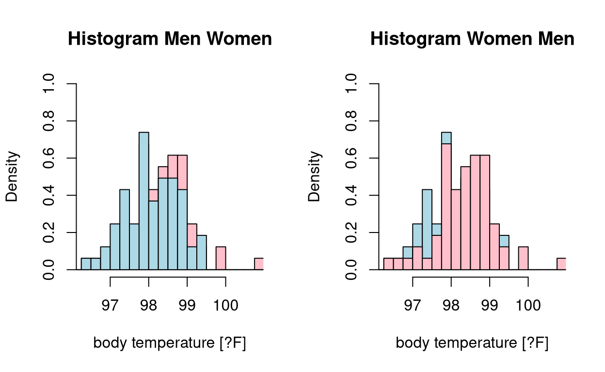
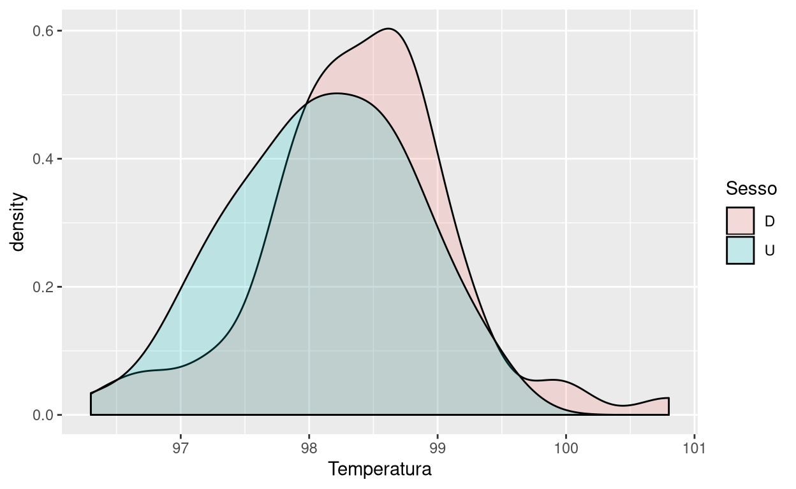
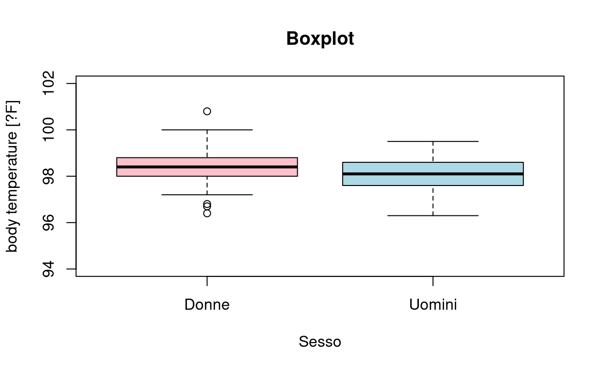
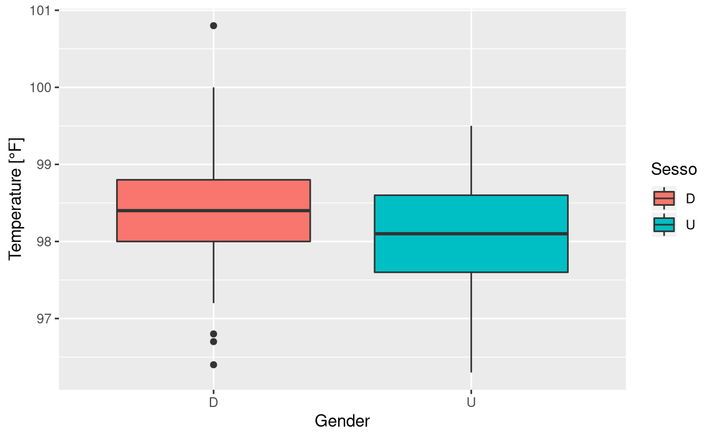

Univariate Descriptive
Example 1
Introduction
First of all, we load the required libraries.
library(MASS)
library(plotrix)
library(lattice)
library(moments)
library(tidyverse)## ── Attaching packages ────────────────────────────────────────────────────────────────────────────────────────────────────────── tidyverse 1.3.0 ──## ✓ ggplot2 3.2.1 ✓ purrr 0.3.3
## ✓ tibble 2.1.3 ✓ dplyr 0.8.3
## ✓ tidyr 1.0.0 ✓ stringr 1.4.0
## ✓ readr 1.3.1 ✓ forcats 0.4.0## ── Conflicts ───────────────────────────────────────────────────────────────────────────────────────────────────────────── tidyverse_conflicts() ──
## x dplyr::filter() masks stats::filter()
## x dplyr::lag() masks stats::lag()
## x dplyr::select() masks MASS::select()Our goal is to analyse the data contained within the magnesium.txt file. The file contains the measurements of the quantity of magnesium [mmol/l] in the blood of 140 healthy subjects.
Let us load the data.
magnesio <- read.table(file = "../data/magnesium.txt", header = TRUE)
attach(magnesio)
magnesioLet us double-check the length of the dataset.
(n <- length(magnesio$Magnesio))## [1] 140Location and shape indices
We compute some location and shape indices. Namely, the minimum,
min(Magnesio)## [1] 0.66the maximum,
max(Magnesio)## [1] 0.95the mean,
mean(Magnesio)## [1] 0.81the standard deviation,
sqrt(var(Magnesio))## [1] 0.05687295sd(Magnesio)## [1] 0.05687295the range,
range(Magnesio)## [1] 0.66 0.95the quartiles and interquartile range,
quantile(Magnesio, 0.25)## 25%
## 0.77quantile(Magnesio, 0.5)## 50%
## 0.81quantile(Magnesio, 0.75)## 75%
## 0.85quantile(Magnesio) # if no specification are provided, all the quartiles are computed## 0% 25% 50% 75% 100%
## 0.66 0.77 0.81 0.85 0.95IQR(Magnesio)## [1] 0.08(moments can also be computed like this:)
(mom <- all.moments(magnesio, central = TRUE, order.max = 4))## [,1]
## [1,] 1.000000e+00
## [2,] -5.392512e-17
## [3,] 3.211429e-03
## [4,] -1.530000e-05
## [5,] 2.904657e-05skewness (notice that the skewnes of symmetric data is \(0\)),
skewness(magnesio)## Magnesio
## -0.08407058(sum((Magnesio - mean(Magnesio))^3) / n) / (sum((Magnesio - mean(Magnesio))^2) / n)^(3 / 2)## [1] -0.08407058mom[3 + 1] / mom[2 + 1]^(3 / 2)## [1] -0.08407058kurtosis (and notice that the kurtosis of the normal distribution is \(3\).
kurtosis(magnesio)## Magnesio
## 2.816426(sum((Magnesio - mean(Magnesio))^4) / n) / (sum((Magnesio - mean(Magnesio))^2) / n)^2## [1] 2.816426mom[4 + 1] / mom[2 + 1]^2## [1] 2.816426We detach the data.
detach(magnesio)Comparison with Normal
Note what happens to the skeweness and Kurtosis indices when distributions are symmetrical or not. Since skewness is a measure of symmetry (more precisely, of the lack of symmetry), data sets with high kurtosis tend to have heavy tails, or outliers. Since Kurtosis is a measure of whether the data are heavy-tailed or light-tailed relative to a normal distribution, data sets with low kurtosis tend to have light tails, or lack of outliers.
We now check this against a Normal distrubtion (which is symmetric)
dat <- rnorm(100000, mean = 0, sd = 1)
summary(dat)## Min. 1st Qu. Median Mean 3rd Qu. Max.
## -4.392786 -0.673755 0.005627 0.002126 0.677394 4.079540The skewness is almost \(0\), like in all symmetric distributions.
skewness(dat)## [1] -0.00874124Kurtosis is close to \(3\): light tails and no tendency to outlier with respect to the Normal distribution.
kurtosis(dat)## [1] 3.014687We make the same analysis simulating an exponential distribution. We set the rate \(\lambda = 2\). The theoretical mean is equal to \(\frac{1}{\lambda}\).
dat <- rexp(100000, rate = 2) # the theoretical mean is equal to 1/rate
summary(dat)## Min. 1st Qu. Median Mean 3rd Qu. Max.
## 0.000003 0.142750 0.345851 0.499263 0.695609 6.984319We make an histogram.
hist(dat)
The positive skewness means that the right tail is long with respect to the left tail.
skewness(dat)## [1] 1.969657The high kurtosis implies a heavy tail and a tendency to outliers with respect to the Normal distribution.
kurtosis(dat)## [1] 8.814242Example 2
We now consider the cavendish.txt data file, from Stigler. It consists of \(29\) measurements of earth density, carried out by Henry Cavendish in 1798. The goal is to analyse Cavendish data and detect any outlier.
caven <- read.table(file = "../data/cavendish.txt", header = TRUE)
cavenattach(caven)Location and shape indices
We compute some location and shape indices. Namely, the minimum,
min(Density)## [1] 4.07the maximum,
max(Density)## [1] 5.86the mean,
mean(Density)## [1] 5.419655the standard deviation,
sqrt(var(Density))## [1] 0.3388793sd(Density)## [1] 0.3388793the range,
range(Density)## [1] 4.07 5.86the quartiles and interquartile range,
(q1 <- quantile(Density, 0.25))## 25%
## 5.3quantile(Density, 0.5)## 50%
## 5.46(q3 <- quantile(Density, 0.75))## 75%
## 5.61quantile(Density)## 0% 25% 50% 75% 100%
## 4.07 5.30 5.46 5.61 5.86(iqr <- IQR(Density))## [1] 0.31(moments can also be computed like this:)
(mom <- all.moments(Density, central = TRUE, order.max = 4))## [1] 1.000000e+00 -3.062684e-17 1.108792e-01 -8.147809e-02 1.216330e-01skewness (notice that the skewnes of symmetric data is \(0\)),
skewness(Density)## [1] -2.206814(sum((Density - mean(Density))^3) / n) / (sum((Density - mean(Density))^2) / n)^(3 / 2)## [1] -4.848761mom[3 + 1] / mom[2 + 1]^(3 / 2)## [1] -2.206814kurtosis (and notice that the kurtosis of the normal distribution is \(3\).
kurtosis(Density)## [1] 9.89353(sum((Density - mean(Density))^4) / n) / (sum((Density - mean(Density))^2) / n)^2## [1] 47.76187mom[4 + 1] / mom[2 + 1]^2## [1] 9.89353We make some graphical representations of the continuous variable Density.
histogram <- hist(Density, plot = TRUE, breaks = seq(4, 6, .25))
boxplot(Density, horizontal = FALSE, main = "Boxplot of Density", ylab = "earth density")
Notice the plot below the lower whisker.
Outliers Identification
We try to identify potential outliers.
Density[which(Density < q1 - 1.5 * iqr)]## [1] 4.07Density[which(Density > q3 + 1.5 * iqr)]## numeric(0)We find the point below the whisker! We remove the outlier.
new_density <- Density[-which(Density < q1 - 1.5 * iqr)]
new_density## [1] 5.50 5.57 5.42 5.61 5.53 5.47 4.88 5.62 5.63 5.29 5.34 5.26 5.44 5.46 5.55
## [16] 5.34 5.30 5.36 5.79 5.75 5.29 5.10 5.86 5.58 5.27 5.85 5.65 5.39Check the lengths!
length(Density)## [1] 29length(new_density)## [1] 28Comparison among location and shape indices after removing the outlier.
We compare location and shape indices before and after the removal of the outlier. Robust indices do not change a lot.
knitr::kable(rbind(quantile(Density), quantile(new_density)))| 0% | 25% | 50% | 75% | 100% |
|---|---|---|---|---|
| 4.07 | 5.30 | 5.460 | 5.6100 | 5.86 |
| 4.88 | 5.33 | 5.465 | 5.6125 | 5.86 |
The mean and (in particular) the standard deviation are more heavily affected.
knitr::kable(rbind(cbind(mean(Density), sd(Density)), cbind(mean(new_density), sd(new_density))), col.names = c("Mean", "Standard Deviation"))| Mean | Standard Deviation |
|---|---|
| 5.419655 | 0.3388793 |
| 5.467857 | 0.2218501 |
We also make a boxplot of the data without the outlier.
boxplot(new_density, horizontal = FALSE, main = "Boxplot Density", ylab = "earth density")
We are finally ready to detach the data set.
detach(caven)Exercise I
Repeat the previous analysis on the dataset serum.txt:
* Compute suitable location and dispersion indices
* Give a graphical representation of the variable
* Identify (*if applicable*) any outliers and compare the results with and without removing them from the dataset.Data are taken from [Bland]. They contain the triglyceride concentration in blood serum [mmol/l] of the umbilical cord in 282 subjects.
serum <- read.table(file = "../data/serum.txt", header = TRUE)Example 3
We now turn our attention to a third dataset, as found in Mackowiak and Wasserman. The dataset comprises 130 tri-variate observations:
1. Temperature (*temperature*) [°F]
1. Sesso (*gender*) (U: Male, D: Female)
1. Freq cardiaca (*cardiac frequency*) [pulse/min]The goals of the analysis are to:
1. Describe the variable `Temperatura` through suitable indices.
1. Plot it and interpret it.
1. Compare, both graphically and quantitatively) the distribution of male and female temperatures.temp <- read.table(file = "../data/temperature.txt", header = T)
tempdim(temp)## [1] 130 3dimnames(temp)## [[1]]
## [1] "1" "2" "3" "4" "5" "6" "7" "8" "9" "10" "11" "12"
## [13] "13" "14" "15" "16" "17" "18" "19" "20" "21" "22" "23" "24"
## [25] "25" "26" "27" "28" "29" "30" "31" "32" "33" "34" "35" "36"
## [37] "37" "38" "39" "40" "41" "42" "43" "44" "45" "46" "47" "48"
## [49] "49" "50" "51" "52" "53" "54" "55" "56" "57" "58" "59" "60"
## [61] "61" "62" "63" "64" "65" "66" "67" "68" "69" "70" "71" "72"
## [73] "73" "74" "75" "76" "77" "78" "79" "80" "81" "82" "83" "84"
## [85] "85" "86" "87" "88" "89" "90" "91" "92" "93" "94" "95" "96"
## [97] "97" "98" "99" "100" "101" "102" "103" "104" "105" "106" "107" "108"
## [109] "109" "110" "111" "112" "113" "114" "115" "116" "117" "118" "119" "120"
## [121] "121" "122" "123" "124" "125" "126" "127" "128" "129" "130"
##
## [[2]]
## [1] "Temperatura" "Sesso" "Freq_cardiaca"attach(temp)
n <- length(Temperatura)The mean is:
mean(Temperatura)## [1] 98.24923The variance is:
var(Temperatura)## [1] 0.5375575The population variance is obtained donig \[\frac{n - 1}{n} \mathrm{Var}\left(\mathrm{Temperatura}\right).\]
The standard deviation is:
sd(Temperatura)## [1] 0.7331832The population standard deviation is obtained donig \[\frac{n - 1}{n} \mathrm{sd}\left(\mathrm{Temperatura}\right).\]
The minimum and the maximum are:
min(Temperatura)## [1] 96.3max(Temperatura)## [1] 100.8The range:
range(Temperatura)## [1] 96.3 100.8diff(range(Temperatura))## [1] 4.5The quantiles:
quantile(Temperatura)## 0% 25% 50% 75% 100%
## 96.3 97.8 98.3 98.7 100.8Q1 <- quantile(Temperatura, 0.25)
Q3 <- quantile(Temperatura, 0.75)
IQR(Temperatura)## [1] 0.9Graphical Representations
We make a histogram
hist(Temperatura, prob = TRUE, main = "Histogram", xlab = "body temperature [°F]", ylab = "density")
and a boxplot.
boxplot(Temperatura, horizontal = FALSE, main = "Boxplot", ylab = "body temperature [°F]", ylim = c(96, 101))
Comparison
To aid us with the analysis, we use the tapply() function. It takes three main arguments:
* the variable of interest
* the stratifying categorical variable
* the operation to be applied to the first argument, stratified according to the categories introduced by the second argument.We compute the mean.
tapply(Temperatura, Sesso, mean)## D U
## 98.39385 98.10462Exercise What do the following mean:
tapply(Temperatura, Sesso, var)tapply(Temperatura, Sesso, sd)tapply(Temperatura, Sesso, min)tapply(Temperatura, Sesso, max)
We now compute the range.
tapply(Temperatura, Sesso, range)## $D
## [1] 96.4 100.8
##
## $U
## [1] 96.3 99.5To compute the range within the categories, we resort to the diff() function.
diff(tapply(Temperatura, Sesso, range)$D)## [1] 4.4diff(tapply(Temperatura, Sesso, range)$U)## [1] 3.2Let us investigate the quantiles. We print the IQR of women and men, respectively, noting that men’s IQE is wider than women’s IQR.
(Q <- tapply(Temperatura, Sesso, quantile))## $D
## 0% 25% 50% 75% 100%
## 96.4 98.0 98.4 98.8 100.8
##
## $U
## 0% 25% 50% 75% 100%
## 96.3 97.6 98.1 98.6 99.5Q1 <- c(Q$D[2], Q$U[2])
Q3 <- c(Q$D[4], Q$U[4])
Q3 - Q1## 75% 75%
## 0.8 1.0Temperatura using the tapply() command.
Q_90 <- tapply(Temperatura, Sesso, quantile, probs = 0.9)
Q_90Graphical Representation
We now make some histrograms.
Flank Histograms
par(mfrow = c(1, 2)) # to make partition of the graph window
hist(Temperatura[Sesso == "D"],
prob = TRUE, main = "Histogram Women", xlab = "body temperature [?F]",
ylab = "Density", col = "pink", xlim = range(Temperatura), breaks = seq(96, 101, .25), ylim = c(0, 1)
)
hist(Temperatura[Sesso == "U"],
prob = TRUE, main = "Histogram Men", xlab = "body temperature [?F]",
ylab = "Density", col = "lightblue", xlim = range(Temperatura), breaks = seq(96, 101, .25), ylim = c(0, 1)
)
Overlap Histograms
par(mfrow = c(1, 2))
hist(Temperatura[Sesso == "D"],
prob = TRUE, main = "Histogram Men Women", xlab = "body temperature [?F]",
ylab = "Density", col = "pink", xlim = range(Temperatura), breaks = seq(96, 101, .25), ylim = c(0, 1)
)
hist(Temperatura[Sesso == "U"],
prob = TRUE, xlab = "body temperature [?F]",
ylab = "Densit?", col = "lightblue", xlim = range(Temperatura), breaks = seq(96, 101, .25), ylim = c(0, 1), add = TRUE
)
hist(Temperatura[Sesso == "U"],
prob = TRUE, main = "Histogram Women Men", xlab = "body temperature [?F]",
ylab = "Density", col = "lightblue", xlim = range(Temperatura), breaks = seq(96, 101, .25), ylim = c(0, 1)
)
hist(Temperatura[Sesso == "D"],
prob = TRUE, xlab = "body temperature [?F]",
ylab = "Densit?", col = "pink", xlim = range(Temperatura), breaks = seq(96, 101, .25), ylim = c(0, 1), add = TRUE
)
ggplot
temp %>%
tibble() %>%
ggplot() +
geom_density(mapping = aes(Temperatura, fill = Sesso), alpha = 0.2)
BOXPLOTS
We now turn our attention to boxplots.
Basic Boxplot
boxplot(Temperatura ~ Sesso,
data = temp, horizontal = FALSE, main = "Boxplot", names = c("Donne", "Uomini"), col = c("pink", "lightblue"),
ylab = "body temperature [?F]", ylim = c(94, 102)
)
ggplot Boxplot
temp %>%
tibble() %>%
ggplot() +
geom_boxplot(mapping = aes(x = Sesso, y = Temperatura, fill = Sesso)) +
scale_x_discrete(name = "Gender") +
scale_y_continuous(name = "Temperature [°F]")
Conclusion
To conclude, we detach the data.
detach(temp)